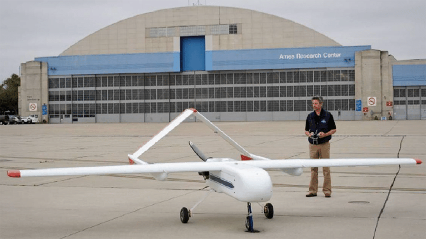

Medium drones
Home
Content
Here is the content
Contact us
Sign In
Medium-sized drones are larger and heavier than smaller drones, with dimensions exceeding 2 meters and weighing up to 200 kilograms. They take two people to lift them, which are most often used for professional applications and amateur photography.
